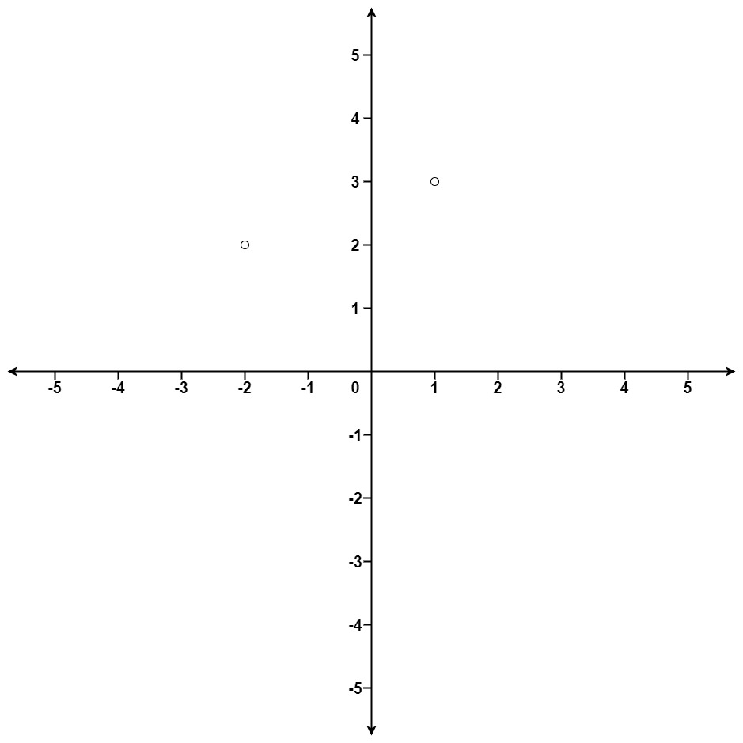

973. 最接近原点的 K 个点
快速选择：按距离平方（免开方）划分，让下标 k-1 归位，左边就是答案；平均 O(n)，不用全排序。
思路
- 只需要「前 k 近」这个集合，不必排序：把下标
k-1归位的快速选择即可。 - 每轮随机选基准换到末尾，扫一遍把距离平方更小的换到左边，基准落到
p：左边全 ≤ 基准。 p与target比较：相等收工；小了递归右段，大了递归左段，只走一边。- 返回
points[0..k-1]（顺序任意都合法）；距离平方用long存，免开方也免溢出。
图解
最优解
1import java.util.*;2 3class Solution {4 private final Random rnd = new Random();5 6 public int[][] kClosest(int[][] points, int k) {7 quickSelect(points, 0, points.length - 1, k - 1);8 return Arrays.copyOfRange(points, 0, k);9 }10 11 // 迭代式快速选择：让下标 target（第 k 近 = 下标 k-1）归位，左边全部 ≤ 它12 private void quickSelect(int[][] a, int lo, int hi, int target) {13 while (lo < hi) {14 int p = partition(a, lo, hi);15 if (p == target) return;16 if (p < target) lo = p + 1; // 第 k 近在右段17 else hi = p - 1; // 第 k 近在左段18 }19 }20 21 // 随机选基准换到末尾；扫一遍把比它近的换到左边，返回基准最终落点的下标22 private int partition(int[][] a, int lo, int hi) {23 int r = lo + rnd.nextInt(hi - lo + 1);24 swap(a, r, hi);25 long pivot = dist2(a[hi]);26 int i = lo;27 for (int j = lo; j < hi; j++) {28 if (dist2(a[j]) < pivot) swap(a, i++, j);29 }30 swap(a, i, hi);31 return i;32 }33 34 // 用距离平方比较，免开方；坐标 ≤ 10^4，平方和用 long 更稳35 private long dist2(int[] p) {36 return (long) p[0] * p[0] + (long) p[1] * p[1];37 }38 39 private void swap(int[][] a, int i, int j) {40 int[] t = a[i];41 a[i] = a[j];42 a[j] = t;43 }44}题目
给定一个数组 points ，其中 points[i] = [xi, yi] 表示 X-Y 平面上的一个点，并且是一个整数 k ，返回离原点 (0,0) 最近的 k 个点。
这里，平面上两点之间的距离是 欧几里德距离（ √(x1 - x2)2 + (y1 - y2)2 ）。
你可以按 任何顺序 返回答案。除了点坐标的顺序之外，答案 确保 是 唯一 的。
示例 1：

输入：points = [[1,3],[-2,2]], k = 1 输出：[[-2,2]] 解释： (1, 3) 和原点之间的距离为 sqrt(10)， (-2, 2) 和原点之间的距离为 sqrt(8)， 由于 sqrt(8) < sqrt(10)，(-2, 2) 离原点更近。 我们只需要距离原点最近的 K = 1 个点，所以答案就是 [[-2,2]]。
示例 2：
输入：points = [[3,3],[5,-1],[-2,4]], k = 2 输出：[[3,3],[-2,4]] （答案 [[-2,4],[3,3]] 也会被接受。）
提示：
1 <= k <= points.length <= 104-104 < xi, yi < 104
题面取自力扣当前版本。
数据快照 2026-11-04。题面版权归力扣所有，本站点仅供本人学习使用，请勿对外发布。